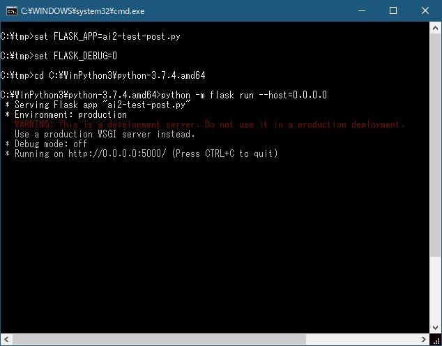
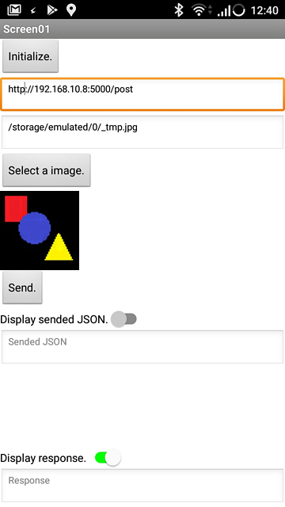
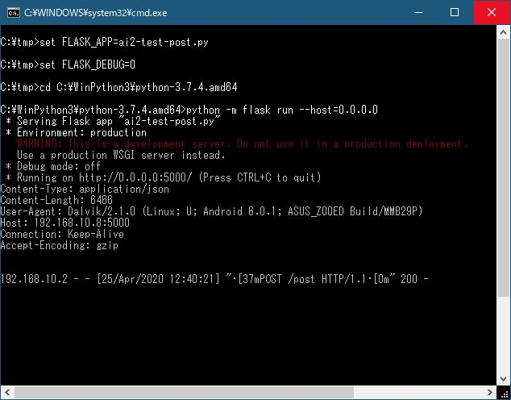
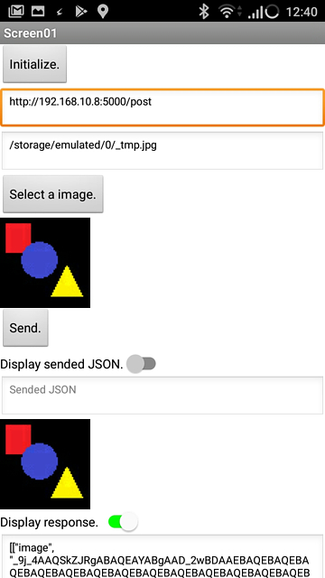

AI2で画像の送信と受信（HTTP通信）で、画像の送受信をApp Inventor2（以降AI2）で行いました。
今回は、画像の送信先をPCのウェブアプリケーション（エコーサーバー）にします。PCのウェブアプリケーションは、PythonのFlaskで実現します。
ポイントは、AI2から受信したテキストデータを画像に戻し、PC上に保存し、受信したテキストデータをJSON形式にしてAI2に返信します。
前回と同様に、作成したプログラム（今回はPythonスクリプトなど）はこちらに置いておきます。本ページではポイントを説明します。
Flaskは軽量なPython Webアプリケーションフレームワークです。簡単に開始できるのが特徴ですが、複雑なアプリケーションにスケールアップするようにも設計されています。
最小限のFlaskアプリケーションは次のようになります。
http://[アドレス]:[ポート番号]/で、「Hello World!」が表示されます。
from flask import Flask
app = Flask(__name__)
@app.route('/')
def hello_world():
return 'Hello, World!'Flaskは人気のフレームワークの一つなので、入門サイトはたくさんあります。
今回は公式サイトのドキュメントを参考にしました。（公式サイトのクイックスタート）英語が苦手な方はGoggle翻訳などを利用してください。
Pythonにインストールしていない場合は、DOSプロンプト上で以下を実行してください。
python -m pip install Flask今回の機能を実現するスクリプトは以下の通りです。スクリプト名はai2-test-post.pyです。
#-*-coding:utf-8;-*-
import base64
from flask import Flask, request
app = Flask(__name__)
@app.route('/')
def index():
return 'Hello World!'
@app.route('/post', methods=["POST"])
def test_post():
print(request.headers)
str_enc = request.json['image']
bin_dec = base64.urlsafe_b64decode(
str_enc + '=' * (-len(str_enc)%4))
fnm = 'C:/tmp/flsk-test-post/tmp000.jpg'
with open(fnm, "wb") as f:
f.write(bin_dec)
return '{"json":{"image":"' + str_enc + '"}}'こちらの「A Minimal Application」、「Routing」、「HTTP Methods」などを参考にしました。
さて、test_post()のポイントを説明します。
受信データは以下のようになっていますので、
{"image":"★★★Base64の文字列★★★"}以下のようにimageキーから画像のテキストデータを取得します。request.get_json()でいったん変数に代入しても構いません。
str_enc = request.json['image']次の行も重要です。単純にbin_dec = base64.urlsafe_b64decode(str_enc)としても正常にデコードされない場合があります。
bin_dec = base64.urlsafe_b64decode(
str_enc + '=' * (-len(str_enc)%4))これは、「base64.pyでbinascii.Error: Incorrect paddingを解決してみた」にあるように、base64モジュールが4文字づつで処理しているからです。4文字区切りになるように「=」を追加する必要があります。
そして、下のように画像ファイルを保存します。C:/tmp/flsk-test-post/に保存していますので、フォルダを作成しておいてください。
fnm = 'C:/tmp/flsk-test-post/tmp000.jpg'
with open(fnm, "wb") as f:
f.write(bin_dec)最後に、httpbin.org に似せたフォーマットで返信します。
return '{"json":{"image":"' + str_enc + '"}}'スクリプトの実行は、ai2-test-post.pyをPythonのLibフォルダにコピーし、DOSプロンプト上で以下を実行します。私の環境では、C:\WinPython3\python-3.7.4.amd64にpython.exeがあります。
set FLASK_APP=ai2-test-post.py
set FLASK_DEBUG=0
cd C:\WinPython3\python-3.7.4.amd64
python -m flask run --host=0.0.0.0こちらの「Externally Visible Server」、「Debug Mode」などを参考にしました。
特に、--host=0.0.0.0を忘れないようにしてください、デフォルトでは自分のコンピューターからのみアクセスでき、ネットワーク内の他のコンピューターからはアクセスできない仕様になっています。
スマホとPCを同一のWiFi環境で繋げました。私の環境では、PCのアドレスは「192.168.10.8」でした。
スクリプト実行後の画面。

AI2で画像の送信と受信（HTTP通信）で作成した「SampleHttpPost2」を起動します。
URLにhttp://192.168.10.8:5000/postを入力し、「Select a image.」ボタンで画像を選択します。

そして、「Send」ボタンを押します。

以下は、「SampleHttpPost2」での結果画面です。

ちゃんと画像が戻ってきました！